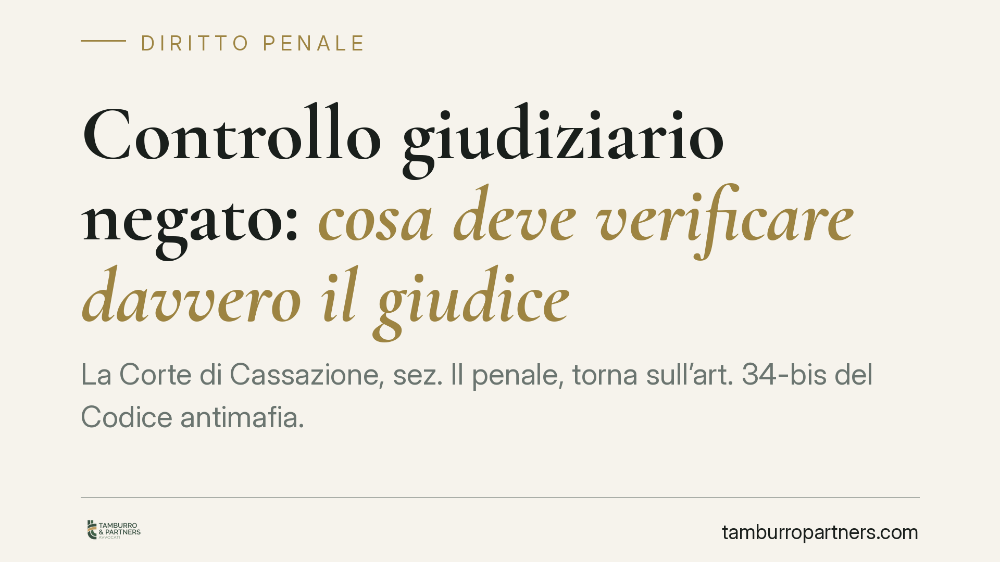

Controllo giudiziario negato: cosa deve verificare davvero il giudice
La Corte di Cassazione, sez. II penale, torna sull'art. 34-bis del Codice antimafia. Il giudice che decide sull'istanza di controllo giudiziario non può fermarsi al contenuto dell'interdittiva prefettizia: deve valutare in concreto se l'agevolazione mafiosa sia stata occasionale e se l'impresa sia recuperabile. Una decisione che sposta il baricentro dalla presunzione di pericolosità alla verifica sostanziale.

Il caso
Un'impresa individuale colpita da interdittiva antimafia chiede al tribunale il controllo giudiziario previsto dall'art. 34-bis, comma 6, del d.lgs. n. 159/2011. La richiesta viene respinta: secondo la Corte territoriale, il quadro emerso dal provvedimento prefettizio era sufficiente a escludere l'accesso alla misura.
La Cassazione annulla. Il messaggio è netto: il giudice non può appiattire la propria valutazione su quella dell'autorità amministrativa. Deve compiere un accertamento autonomo, orientato a due parametri precisi.
Inquadramento normativo
L'art. 34-bis, comma 6, consente all'impresa destinataria di un'interdittiva antimafia di chiedere al tribunale l'ammissione al controllo giudiziario. Si tratta di una misura di prevenzione dal contenuto peculiare: non colpisce l'impresa per estrometterla dal mercato, ma la accompagna con una vigilanza qualificata (nomina di un amministratore giudiziario, obblighi comunicativi, prescrizioni gestionali) allo scopo di bonificarla e reintrodurla nel circuito economico legale.
Il presupposto è che l'agevolazione dell'attività mafiosa sia stata occasionale. La logica del controllo giudiziario è terapeutica, non ablatoria: presuppone un'impresa sana nella struttura, ma esposta a un condizionamento episodico e reversibile. È il rovescio del sequestro-confisca, che colpisce invece l'infiltrazione stabile.
La pronuncia in commento chiarisce che questi presupposti vanno verificati in modo distinto e sostanziale. L'interdittiva prefettizia opera su un piano diverso — quello del pericolo di condizionamento ai fini dei rapporti con la pubblica amministrazione — e risponde a una logica prognostica e amministrativa. Non può funzionare come un automatismo che chiude la porta al controllo giudiziario.
Cosa deve verificare il giudice
La Corte individua due accertamenti che il tribunale non può eludere.
Primo: l'occasionalità dell'agevolazione. Il giudice deve stabilire se il contatto con l'ambiente mafioso sia stato episodico e non strutturale. Un'agevolazione occasionale non equivale a un legame organico. È la differenza tra un'impresa che ha subìto un condizionamento e un'impresa che è, di fatto, uno strumento del sodalizio.
Secondo: la recuperabilità dell'impresa. Occorre valutare se l'attività, depurata dall'influenza illecita, possa proseguire in condizioni di legalità. Questo richiede un'analisi della realtà aziendale: assetto, dipendenti, valore economico, capacità di reggersi in autonomia una volta rimosso il fattore inquinante.
Manca uno di questi elementi, la misura non è accessibile. Ma la loro assenza va dimostrata con motivazione autonoma, non ricavata per relationem dal solo provvedimento prefettizio.
Implicazioni pratiche
Per l'impresa colpita da interdittiva, la decisione amplia il margine difensivo. L'istanza ex art. 34-bis non è una formalità destinata a infrangersi contro il contenuto dell'interdittiva: impone al giudice un vaglio pieno e distinto.
Per il difensore, il fronte cambia. Non basta contestare l'interdittiva sul suo terreno amministrativo. Occorre costruire, nel procedimento di prevenzione, un quadro che dimostri l'occasionalità del contatto e la vitalità dell'azienda. Il materiale probatorio — bilanci, organigrammi, ricostruzione dei rapporti contestati — diventa decisivo.
Per i tribunali, cade la scorciatoia motivazionale. Un provvedimento di rigetto che si limiti a richiamare l'interdittiva è esposto all'annullamento in sede di legittimità.
Cosa fare in concreto
- Analizzate l'interdittiva nel merito: individuate quali elementi indichino un condizionamento *episodico* e distinguibili da un legame stabile.
- Documentate la vitalità aziendale: predisponete bilanci, dati occupazionali e analisi economica che dimostrino la recuperabilità dell'impresa una volta rimosso il fattore illecito.
- Impostate l'istanza sui due parametri: articolate occasionalità e recuperabilità come capi distinti, con supporto probatorio specifico per ciascuno.
- Presidiate la motivazione: se il rigetto si fonda su un mero rinvio all'interdittiva, valutate il ricorso per cassazione per difetto di autonomia valutativa.
- Agite con tempestività: l'istanza va coordinata con gli sviluppi del procedimento amministrativo e con la gestione ordinaria dell'impresa.
Un principio, non una garanzia
La pronuncia rafforza il carattere di verifica sostanziale del controllo giudiziario. Non introduce alcun diritto automatico alla misura: l'esito resta legato all'accertamento in concreto dei due presupposti. Ciò che cambia è il metodo imposto al giudice, chiamato a decidere con occhio proprio.
---
*Contributo informativo a cura di Tamburro & Partners - Avv. Giuseppe Tamburro. Non costituisce parere legale.*
Ogni condominio ha una storia a sé.
Se gestisci un'amministrazione e vuoi un confronto su una specifica questione condominiale, scrivi allo studio. Ti rispondiamo entro un giorno lavorativo.